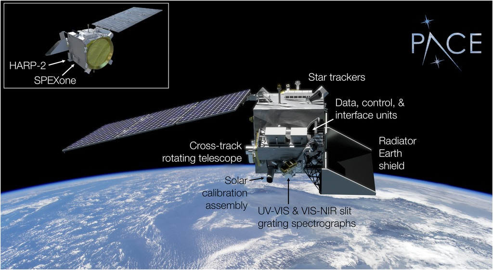
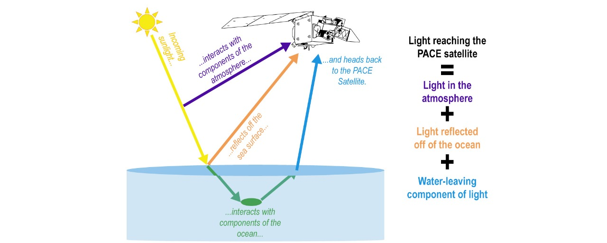
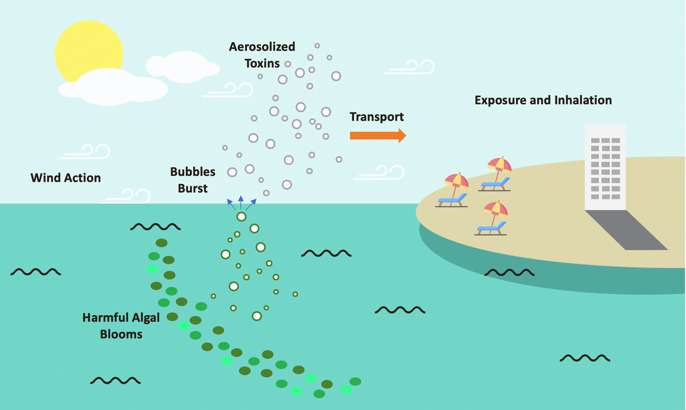

PACE: Objectives and Working
8. PACE: Objectives and Working
8.1 Objectives of PACE
8.11 PACE's main goals and research questions influenced the design of its Ocean Color Instrument.
These goals also led to the decision to include multiangle polarimetry (a tool that helps study how light reflects off Earth's surfaces from different angles) on the satellite observatory.
The core objectives of PACE are:
- Extend key systematic ocean biological, ecological, and biogeochemical climate data records and cloud and aerosol climate data records.
- Make new global measurements of ocean color to improve our understanding of the carbon cycle and ocean ecosystem responses to a changing climate.
- Collect global observations of aerosol and cloud properties, focusing on reducing the largest uncertainties in climate and radiative forcing models of the Earth system.
- Improve our understanding of how aerosols influence ocean biogeochemical cycles and ecosystems and how ocean biological and photochemical processes affect the atmosphere.

8.12 The SDT (Science Definition Team) translated these objectives into a series of questions to be addressed, which we phrase as follows:
- How is Earth changing and what are the consequences for our living resources and food webs, such as phytoplankton?
- What is the concentration and composition of phytoplankton in the ocean and how productive are oceanic ecosystems?
- How are biological, geological, and chemical components of our ocean changing and why?
- What are the distributions of harmful and beneficial algal blooms and how are they related to environmental forces?
- What are the long-term changes in aerosol and cloud properties that PACE can continue to reveal?
- How do clouds affect aerosol properties in regions near cloud boundaries?
- What are the magnitudes and trends of direct aerosol radiative forcing, including its anthropogenic component?
- How are these properties correlated with variations in inter-annual climate oscillations?
- How do atmospheric aerosols influence ocean ecosystems and cycling of matter in our ocean?
- How do ocean processes affect our atmosphere?
- How do such changes influence the Earth system?
- What materials are exchanged between the land and ocean?
- How do these exchanges affect life on our coasts?
- How do human activities affect ocean ecosystems and services and how do changes in these affect people’s health and welfare?
8.2 Working of PACE
As we learnt in Module-6, PACE works on few instruments like OCI(most predominantly used), HARP2 and SPEX which monitor the ocean, and Heritage Instrument MODIS and VIIRS which monitor the atmosphere.

8.21 PACE for Oceans:
About half of Earth's photosynthesis occurs in the ocean, thanks to tiny plants called phytoplankton. Despite making up only 2% of Earth's total plant mass, phytoplankton are highly efficient at capturing carbon from water and converting it into organic matter. They grow and are consumed rapidly, with their entire population being replaced every 2 to 6 days. This quick turnover means they can rapidly respond to environmental changes, unlike land plants such as grass or forests.
However, detecting phytoplankton from space is challenging. Their optical signal (the light they reflect) is weak, and since they live in water—a medium that absorbs light—this makes studying them via remote sensing much harder than studying land plants. To effectively study the ocean, we need highly precise instruments that can distinguish the small signals from phytoplankton amidst the majority of light that comes from the atmosphere.
Phytoplankton and the Carbon Cycle
Phytoplankton play a key role in Earth's carbon cycle by converting atmospheric carbon into forms that can be consumed by other organisms or stored in the deep ocean. Their diversity and the many ways they transport carbon make them crucial to understanding global climate processes.
Harmful Algal Blooms (HABs)

Certain types of algae, such as cyanobacteria, can produce toxins that pose risks to human health through recreational and drinking water exposure. The PACE satellite's Ocean Color Instrument (OCI) will help detect different types of algal blooms and estimate their physiological state, assisting in identifying toxic Harmful Algal Blooms (HABs). The satellite's hyperspectral remote sensing data will be used to differentiate harmful blooms in inland lakes, coastal areas, and estuaries.
The PACE Satellite and Remote Sensing
The PACE satellite detects colors emitted from the ocean's surface, known as water-leaving radiance, which contains vital information about phytoplankton. This data helps monitor the health of the ocean.
PACE collects information on:
- Photosynthetic pigments: Pigments in phytoplankton that absorb sunlight for photosynthesis.
- Phytoplankton communities: Different types of phytoplankton in the ocean.
- Fluorescence from phytoplankton: Light emitted by phytoplankton after absorbing sunlight.
PACE uses remote sensing technology to analyze this light and provide insights into the state of the ocean, contributing valuable data to understand the global marine environment.
This version organizes the details clearly, guiding readers through the roles of phytoplankton, challenges of remote sensing, and the importance of PACE's technology.
8.22 PACE for Atmosphere:
- Our understanding of Earth's climate is most uncertain when it comes to atmospheric aerosols (tiny particles in the air), clouds, and how they interact with each other. These interactions affect how heat is distributed in the atmosphere. Unlike greenhouse gases, aerosols and clouds vary a lot in time and location, making them harder to study.
- Satellites are very important for gathering information about aerosols and clouds. However, there's still uncertainty in how much aerosols influence climate, with estimates ranging from –1.9 to –0.1 watts per square meter. To reduce this uncertainty, we need better satellite data and long-term observations to track trends over time. Having consistent satellite instruments is especially important for creating reliable, long-term climate data.
Using instruments like MODIS and VIIRS, PACE will have a wide viewing swath, allowing it to capture data from a large portion of the Earth's surface regularly.
This is how the VIIRS gathers information:
- AOD Measurements: Aerosol Optical Depth (AOD) measures how aerosols absorb or scatter light in the atmosphere. A low AOD indicates clear skies, while high AOD values show dense aerosol concentrations that can obscure sunlight.
- Dark Target Algorithm: The Dark Target algorithm helps detect bright aerosols over dark surfaces, separating aerosol signals from the surface below. It uses two algorithms: one for land (where surfaces vary) and one for the ocean (where surfaces are more uniform).
- Data from Light Reflectance: Over oceans, light reflectance is measured and combined with supplemental data (e.g., wind speed, ozone, water vapor) to isolate the aerosol signal from gases, helping scientists better assess aerosol properties in near real-time.
- Different Algorithms: In comparison, the Deep Blue algorithm is used to analyze aerosol levels over land, while the SOAR algorithm is used for ocean surfaces. Both use light reflectance to derive aerosol information.
The PACE satellite processes light reflected from the atmosphere, the ocean, and the water-leaving component, which provides key ocean and atmospheric data. This includes systematic records of ocean biology, ecology, biogeochemical cycles, as well as cloud and aerosol data. These insights help improve our understanding of how aerosols impact ocean ecosystems and biogeochemical cycles, and how ocean processes, in turn, influence the atmosphere.